2008 After Burn Report
Welcome
While BRC Census has been producing reports since 2002, it is hard to compare recent data with reports from earlier years (before 2013) because of important differences in methodology, from a convenience sample of self-selected Census takers on-playa to a weighted online survey conducted after the Man burns.
Do you consider yourself to be an artist?
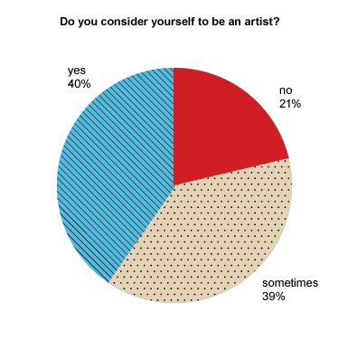
Do you consider yourself to be a person of color?
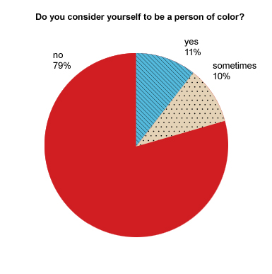
Do you consider yourself to be white?
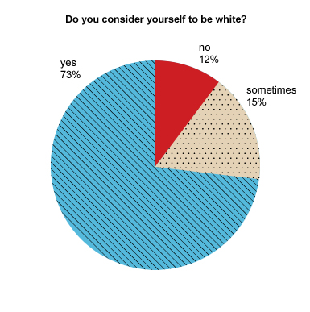
What is the highest level of education you have completed?

Which sex was assigned to you at birth?

What is your current gender?

Are you eligible to vote in the USA?

Your affiliation?

How often do you vote?

Is spirituality important to you?
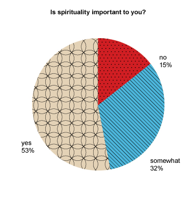
Do you sometimes visit/reside in Nevada?

Did you volunteer with Burning Man outside of BRC last year?
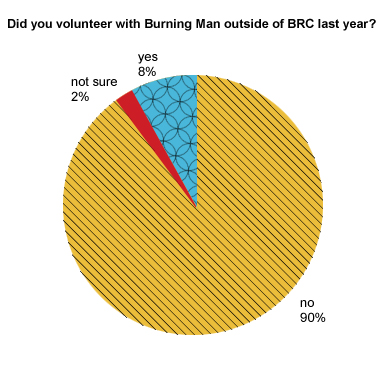
Do you plan on returning to Burning Man?
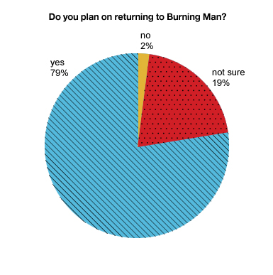
Are you married?
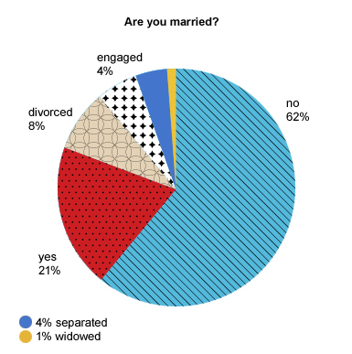
Were you married at Burning Man?

Are you sexually attracted to women?

Are you sexually attracted to men?

Have you ever embarked on a significant romantic relationship with someone you met on the playa?
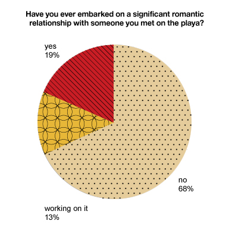
Which best describes the area where you reside?
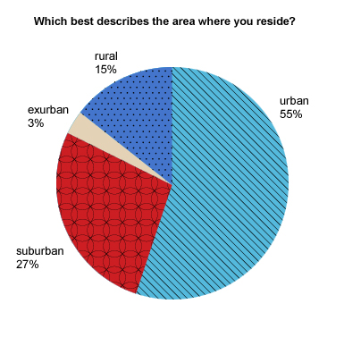
Do you own a home?
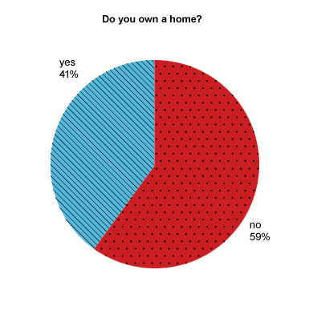
Do you regularly socialize with burners?
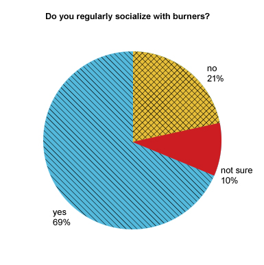